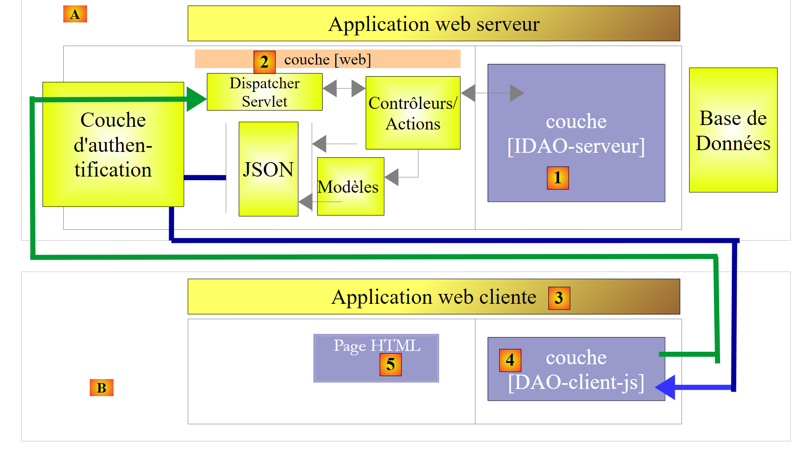
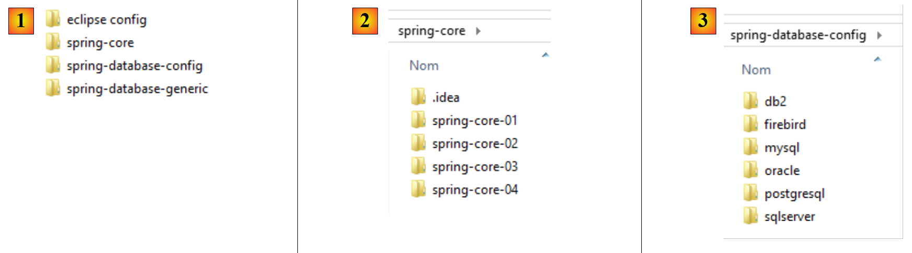

1. Einführung
Die PDF-Datei dieses Dokuments ist verfügbar |HIER||.
Die Beispiele in diesem Dokument sind unter |HIER| verfügbar.
1.1. Inhalt
In diesem Dokument wollen wir verschiedene Konfigurationen für den Betrieb einer Datenbank untersuchen. Betrachten wir die folgende Schichtenarchitektur:
 |
Der Ausführungsablauf verläuft von links nach rechts:
- Zunächst wird eine der Klassen der Schicht [ui] (Use Interface) ausgeführt. Diese instanziiert die Schichten [metier] und [dao]. Wenn es sich bei der Schicht [ui] um eine grafische Benutzeroberfläche handelt, wartet sie anschließend auf Aktionen des Benutzers. Eine Aktion des Benutzers kann die Ausführung von Methoden in allen Schichten der Architektur bis hin zur Datenbank auslösen. Das Ergebnis dieser Ausführungen wird dem Benutzer in der einen oder anderen Form zurückgegeben;
Die Rolle der verschiedenen Schichten könnte wie folgt aussehen:
- Die Schicht [JDBC] (Java DataBase Connectivity) ist eine universelle Schnittstelle für den Zugriff auf Datenbanken. Sie stellt der Schicht [DAO] stets dieselbe Schnittstelle zur Verfügung. Wechselt man von SGBD, reicht es aus, den Treiber JDBC zu ändern. Die Schicht [DAO] ändert sich nicht, sofern man darauf geachtet hat, bestimmte Regeln einzuhalten. Es ist jedoch schwierig, eine 100-prozentige Portabilität zwischen SGBD zu gewährleisten, da diese oft einen erheblichen Anteil an proprietärem SQL enthalten, der nur schwer ignoriert werden kann, da er häufig Leistungsvorteile mit sich bringt. Sobald proprietäres SQL verwendet wird, ist die Portabilität zwischen SGBD nicht mehr möglich. Außerdem weisen die SGBD-Varianten oft unterschiedliche Richtlinien zur automatischen Generierung von Primärschlüsseln sowie reservierte Wörter auf, die hier und da nicht identisch sind. In diesem Dokument ist es dennoch gelungen, die untersuchte JDBC-Architektur auf sechs verschiedene SGBD zu portieren, wobei akzeptiert wurde, dass für jede davon ein eigenes Konfigurationsprojekt erforderlich ist;
- die [DAO]-Schicht stellt eine Schnittstelle für den Zugriff auf die Daten der jeweils verwendeten Datenbank bereit (im Unterschied zur JDBC-Schnittstelle, die Methoden bereitstellt, die für alle SGBD-Systeme gelten);
- die Schicht [métier] implementiert die Verwaltungs- oder Geschäftsregeln der Anwendung.
- Als Eingabedaten dienen ihr die Daten, die über die Schicht [dao] aus der Datenbank stammen, und/oder die vom Benutzer übermittelten Daten, die ihr von der Schicht [ui] übermittelt werden;
- sie erzeugt Daten, die sie über die Schicht [dao] in der Datenbank speichern und/oder an die Schicht [ui] zurückgeben kann, die sie abgefragt hat, um sie dem Benutzer anzuzeigen;
- Die Schicht [ui] ist die Schicht, die die Aktionen des Benutzers ausführt und ihm die Ergebnisse dieser Aktionen zurückgibt;
Im obigen Beispiel sendet die Schicht [DAO] Anfragen an die Schicht SQL, die diese zur Ausführung an die Schicht [JDBC] weiterleitet, wo sie in der Schicht SGBD ausgeführt werden. Seit einigen Jahren (2006) kann sich diese Architektur wie folgt weiterentwickeln:
 |
Nun ist es die Schicht JPA (Java Persistence API), die Anfragen vom Typ SQL an die Schicht JDBC sendet und deren Ergebnisse empfängt. Die Schicht [JPA] stellt der Schicht [DAO] Operationen zum Speichern, Ändern, Löschen und Abrufen von Objekten zur Verfügung. Die Schicht [DAO] sendet keine Befehle SQL mehr. Dieser Ansatz ist portabler, da die Implementierungen von JPA die Unterschiede zu SGBD handhaben, ist jedoch langsamer als die Technologie JDBC. Wir werden Leistungstests durchführen, um dies zu belegen. Die JPA-Technologie formalisiert die Arbeit, die das Hibernate-Framework [http://hibernate.org/] bereits vor Jahren geleistet hat.
Wir werden zwei Schichten [DAO] mit einer der beiden folgenden Architekturen untersuchen:
 |
 |
Die Schichten [DAO1] und [DAO2] müssen dieselbe Schnittstelle [IDAO] implementieren. Somit ist der Test [JUnitTestsDao] für beide Konfigurationen identisch und ermöglicht uns einen Leistungsvergleich. Die Schicht [DAO1] wird mit Spring JDBC implementiert und die Schicht [DAO2] mit Spring JPA;
Anschließend stellen wir die Schnittstelle [IDAO] wie folgt im Web bereit:
 |
- In [1] wird die Schicht [IDAO] über eine von Spring MVC implementierte Webschicht [2] im Web bereitgestellt. Es ist tatsächlich die Schnittstelle [IDAO], die verfügbar gemacht wird, und wir werden zwei Versionen des Webdienstes erstellen, je nachdem, ob diese Schnittstelle mit einer Architektur vom Typ [DAO-JDBC] oder [DAO-JPA-JDBC] implementiert ist;
- In [B] nutzt ein Remote-Client die vom Webdienst bereitgestellten URL, die Zugriff auf die Methoden der Schicht [IDAO-serveur] gewähren. Wir werden sicherstellen, dass die Schicht [DAO-Client] [3] die Schnittstelle [IDAO-serveur] [1] implementiert. Dadurch können wir denselben Test [JUnitTestsDao] verwenden, der bereits zweimal verwendet wurde: [4];
- in [3] wird die Schicht [DAO-client] mit Spring RestTemplate implementiert;
Anschließend sichern wir den Zugriff auf den Webdienst:
 |
- In [5] durchläuft die Anfrage HTTP des Clients eine mit Spring Security implementierte Authentifizierungsschicht;
Anschließend werden wir die bisherige Architektur wie folgt weiterentwickeln:
 |
- In [3] ist die Client-Anwendung selbst eine Webanwendung. Diese stellt ein Formular [5] bereit, über das die URL des gesicherten Webdienstes abgefragt werden können. Der Zugriff auf den gesicherten Webdienst erfolgt über eine in JavaScript implementierte Schicht. Diese Architektur nutzt sogenannte domänenübergreifende Anfragen:
- Der Webdienst [2] stellt URL in der Form [http://machine1:port1/] bereit;
- Die Web-Client-Anwendung [3] wird von einer URL [http://machine2:port2/] heruntergeladen. Wenn [http://machine2:port2/] nicht mit [http://machine1:port1/] identisch ist (gleicher Rechner, gleicher Port), blockiert der Client-Browser die Aufrufe von HTTP aus der Schicht [DAO-client-js]. Um dieses Problem zu beheben, muss der Webdienst domänenübergreifende Anfragen zulassen. Wir werden sehen, wie das geht;
Die vorgestellten Projekte wurden mit den folgenden sechs SGBD getestet:
- MySQL 5 Community Edition;
- SQL Server 2014 Express;
- PostgreSQL 9.4;
- Oracle Express 11g Release 2;
- IBM DB2 Express-C 10.5;
- Firebird 2.5.4;
Für jedes dieser SGBD wurden vier verschiedene Schichten [DAO] entwickelt:
- eine mit Spring implementierte Schicht JDBC;
- eine mit Spring JPA und dem Hibernate-Anbieter JPA implementierte Schicht;
- eine mit Spring JPA und dem Anbieter JPA EclipseLink implementierte Schicht;
- eine mit Spring implementierte Schicht JPA und die Provider JPA sowie OpenJPA;
Es handelt sich also um eine Sammlung von vierundzwanzig verschiedenen Konfigurationen, die hier vorgestellt wird. Es wurden große Anstrengungen zur Faktorisierung unternommen:
- Der Großteil des Codes wird nur einmal geschrieben. Er basiert auf zwei Maven-Konfigurationsprojekten:
- Das eine konfiguriert die Schicht JDBC;
- das andere konfiguriert die Ebene JPA;
 |
 |
Das Maven-Konfigurationsprojekt für die Schicht JDBC [1] eines bestimmten SGBD besteht aus zwei Schritten:
- das Treiberarchiv JDBC importieren;
- die Zugangsdaten für die verwendete Datenbank sowie die verschiedenen Befehle SQL festlegen, die die Schicht [DAO1] an den Treiber JDBC senden wird. Obwohl SQL standardisiert ist, traten Portabilitätsprobleme auf, die hauptsächlich darauf zurückzuführen waren, dass in den Abfragen Tabellen- und Spaltennamen vorkamen, die sich in bestimmten SGBD als unzulässige Schlüsselwörter erwiesen (Tabelle ROLES für DB2, Spalte PASSWORD für Firebird). Obwohl Spaltennamen normalerweise nicht zwischen Groß- und Kleinschreibung unterscheiden, trat bei PostgreSQL ein Problem mit der Spalte ID des Primärschlüssels der Tabellen auf. Das Programm verlangte, dass sie „id“ in Kleinbuchstaben heißen sollte. Das sind typische Beispiele für unerwartete Portabilitätsprobleme;
Die drei Maven-Konfigurationsprojekte der Schicht JPA, [2] und eines bestimmten SGBD bestehen ebenfalls aus zwei Punkten:
- das Archiv der Implementierung JPA importieren;
- die Konfiguration der Implementierung JPA, die für das verbundene spezifische SGBD verwendet wird. Tatsächlich ist es die Schicht JPA, die die Befehle SQL an die Schicht JDBC sendet. Um effizient zu arbeiten, muss sie die SGBD kennen, um ihr die Befehle SQL zu senden, die sie erkennen wird. Diese Befehle können den SQL nutzen, der Eigentümer dieses SGBD ist, sowie dessen spezifische Eigenschaften (Datentypen, Sequenzen, Trigger, Prozeduren, automatische Generierung von Primärschlüsseln usw.);
Somit gibt es vierundzwanzig Maven-Konfigurationsprojekte (4 Konfigurationen × 6 SGBD), auf denen alle anderen Projekte zur Nutzung der Datenbank basieren werden. Da in den obigen Schemata die Schichten [DAO1] und [DAO2] dieselbe Schnittstelle bieten, werden die 24 Konfigurationen der beiden oben genannten Architekturen mit einer einzigen Testklasse [JUnitTestsDao] getestet. Sobald diese Architekturen überprüft sind, gibt es keine Schwierigkeiten mehr:
- Das Maven-Projekt zur Veröffentlichung der Datenbank im Web basiert auf diesen beiden Architekturen. Auch hier gibt es also 24 mögliche Konfigurationen;
- das Maven-Projekt zur Absicherung des Zugriffs auf den Webdienst baut auf dem vorherigen Projekt auf und verfügt ebenfalls über 24 mögliche Konfigurationen;
- schließlich stützt sich das Maven-Projekt, das domänenübergreifende Anfragen an den gesicherten Webdienst ermöglicht, auf das vorherige Projekt und verfügt ebenfalls über 24 mögliche Konfigurationen;
Die Untersuchung erfolgt mit den Versionen SGBD, MySQL5 und der Hibernate-Implementierung JPA. Anschließend erfolgt die Portierung auf die Eclipselink-Implementierungen JPA und OpenJPA. Anschließend erfolgt die Portierung auf die anderen Datenbanken (PostgresQL, Oracle, SQL, Server, DB2, Firebird).
Dieser Kurs richtet sich an Anfänger. Die meisten der verwendeten Konzepte werden erklärt. Kenntnisse in Datenbankprogrammierung oder Webprogrammierung sind nicht erforderlich. Allerdings sind fundierte Kenntnisse der Sprache SQL erforderlich, da die verwendeten SQL-Abfragen nicht erläutert werden.
Um die Beispiele zu verstehen, sind Grundkenntnisse der Programmiersprache Java erforderlich, die in jedem Einführungskurs zu dieser Sprache vermittelt werden. Die ersten beiden Kapitel des Dokuments [Introduction au langage Java] reichen dafür aus. Es handelt sich um ein älteres Dokument (1998, überarbeitet 2002), aber die Grundlagen sind vorhanden. Für einen umfassenden Kurs empfiehlt sich das umfangreiche Buch von Jean-Marie Doudoux [http://www.jmdoudoux.fr/java].
Dieses Dokument erhebt keinen Anspruch auf Vollständigkeit. Es soll lediglich eine Methodik und Code-Beispiele vermitteln, die in ähnlichen Kontexten wiederverwendet werden können. Das Dokument wurde so verfasst, dass es auch ohne Computer zur Hand gelesen werden kann. Daher enthält es zahlreiche Screenshots.
Obwohl dieses Dokument nicht alle Möglichkeiten der Programmiersprache Java und auch nicht alle ihre Anwendungsbereiche abdeckt, kann es als Lernhilfe für die Sprache genutzt werden. Wenn der Anfänger diesem Dokument – wenn auch nicht vollständig – folgt, wird er sowohl im Umgang mit der Sprache als auch mit dem Spring-Framework ein „fortgeschrittenes Java“-Niveau erreichen. Anschließend kann er seine Java-Ausbildung mit den folgenden Werken fortsetzen:
- [Einführung in Spring MVC und Thymeleaf anhand von Beispielen (2015)], das das Erlernen des Spring-Ökosystems fortsetzt und dessen Zweig „Webprogrammierung MVC“ vorstellt;
- [Ein Client/Server-Beispiel – AngularJS 1.x / Spring 4 (2014)], das eine Client-Server-Webarchitektur vorstellt, bei der der Client mit dem Framework [AngularJS] und der Server mit [Spring MVC] implementiert wird;
- [Einführung in Java EE mit der NetBeans-IDE und dem GlassFish-Anwendungsserver (2012)], das die Spring-Umgebung zugunsten einer Webarchitektur auf Basis von JSF (Java Server Faces) und EJB (Enterprise Java Bean) verlässt;
- [Einführung in die Android-Tablet-Programmierung mit Android Studio (2016)], die eine Client-Server-Architektur beschreiben, bei der der Client ein Android-Tablet und der Server ein mit Spring implementierter Webdienst ist (MVC);
1.2. Quellen
Dieses Dokument stützt sich auf zwei Hauptquellen:
- [ref1] : [Einführung in Spring MVC und Thymeleaf anhand von Beispielen (2015)]. Das vorliegende Dokument greift die in [ref1] geleistete und vorgestellte Arbeit auf, verwendet dabei jedoch eine andere Datenbank. Es löst die Arbeit lediglich aus dem Kontext der Webprogrammierung mit Spring (MVC) heraus. Da ich festgestellt habe, dass der in [ref1] verwendete Code und die Methodik zur Bereitstellung einer Datenbank im Web wiederverwendbar sind, habe ich beschlossen, daraus ein separates Dokument zu erstellen;
- [ref2] : [Java 5 Persistenz in der Praxis (2007)];
Um sich näher mit Spring zu befassen, können die folgenden Quellen herangezogen werden:
- das Referenzdokument zum Spring-Framework [http://docs.spring.io/spring/docs/current/spring-framework-reference/pdf/spring-framework-reference.pdf];
- Zahlreiche Spring-Tutorials finden Sie unter URL und [http://spring.io/guides];
- die Website [developpez.com], die sich mit Spring [http://spring.developpez.com/] befasst;
- das Tutorial [http://www.tutorialspoint.com/spring/spring_tutorial.pdf];
Leser mit unzureichenden Kenntnissen können sich die Grundlagen mit dem Buch [Introduction au langage SQL avec le SGBD Firebird] unter den Links URL und [Einführung in die Sprache SQL mit dem Firebird-DBMS (2006)] aneignen.
1.3. Verwendete Tools
Die folgenden Beispiele wurden in der folgenden Umgebung getestet:
- Windows 8.1 Pro 64-Bit-Rechner;
- JDK 1.8 (Absatz 23.1);
- IDE Spring Tool Suite 3.6.3 (Absatz 1);
- Chrome-Browser (andere Browser wurden nicht verwendet);
- Chrome-Erweiterung [Advanced Rest Client] (Absatz 1);
- SGBD MySQL 5.6 Community Edition (Absatz 23.4);
- SGBD SQL Server 2014 Express (Absatz 23.9);
- SGBD PostgreSQL 9.4 (Absatz 23.7);
- SGBD Oracle Express 11g Release 2 (Absatz 23.6);
- SGBD IBM DB2 Express-C 10.5 (Absatz 23.8);
- SGBD Firebird 2.5.4 (Absatz 23.10);
- die EMS-Manager-Clients seiner sechs SGBD-Clients (Absatz 23.5);
Achtung bei JDK 1.8. Eine Methode der Fallstudie verwendet eine Methode aus dem Java-8-Paket [java.lang].
Die meisten Beispiele sind Maven-Projekte, die wahlweise mit Eclipse, IDE und NetBeans geöffnet werden können. Im Folgenden stammen die Screenshots aus der Spring Tool Suite, einer Variante von Eclipse.
1.4. Die Beispiele
Die Beispiele stehen unter URL [http://tahe.developpez.com/java/spring-database] als herunterladbare Datei zur Verfügung.
 |
- in [1] die Ordner mit den Beispielen;
- in [2] enthält der Ordner [spring-core] die Spring-Lernprojekte;
- in [3] enthält der Ordner [spring-database-config] die Konfigurationsprojekte JDBC und JPA für die sechs Datenbanken;
 |
- in [4] die Konfiguration von SGBD Oracle. Darin befinden sich drei Ordner:
- [databases] enthält die Skripte SQL zur Erstellung der beiden vom Dokument verwendeten Datenbanken;
- [jdbc-driver] enthält den Oracle-Treiber JDBC sowie ein Skript zur Installation desselben im lokalen Maven-Repository;
- [eclipse] enthält die vier Oracle-Konfigurationsprojekte: [5];
- [oracle-config-jdbc] konfiguriert die Zugriffsebene JDBC für SGBD;
- [oracle-config-jpa-hibernate] konfiguriert die Zugriffsebene JPA für SGBD mit dem Anbieter JPA Hibernate;
- [oracle-config-jpa-eclipselink] konfiguriert die Zugriffsebene JPA für den Zugriff auf SGBD mit dem Anbieter JPA Eclipselink;
- [oracle-config-jpa-openjpa] konfiguriert die Zugriffsebene JPA für den Zugriff auf SGBD mit dem Anbieter JPA OpenJPA;
- In [6] enthält der Ordner [eclipse config / launch configurations] die Ausführungskonfigurationen, die der Leser in Eclipse importieren und anschließend an seine eigene Umgebung anpassen kann;
 |
- in [7], der Ordner „[spring-database-generic]“ enthält den gesamten Code für den Zugriff auf „SGBD“, der den sechs „SGBD“-Projekten und den drei Anbietern „JPA“ gemeinsam ist;
- in [8] enthält [spring-jdbc] vier Projekte, darunter API, JDBC sowie Spring JDBC;
- In [9] ist [spring-jpa / spring-jpa-generic] das Projekt, das eine Schicht JPA nutzt, um auf eine Datenbank zuzugreifen. Die Projekte [generic-create-db*] sind Projekte vom Typ JPA, mit denen die von der Schicht JPA genutzten Datenbanken angelegt werden können;
 |
-
In [10] enthält der Ordner [spring-webjson] die Projekte, die die Datenbank im Web bereitstellen;
- [spring-webjson-server-jdbc-generic] ist der Webdienst, der die Datenbank bereitstellt, auf die mit Spring JDBC zugegriffen wird;
- [spring-webjson-server-jpa-generic] ist der Webdienst, der die Datenbank bereitstellt, auf die mit Spring JPA zugegriffen wird;
- [spring-webjson-client-generic] ist der einzige Client, der den Zugriff auf die beiden vorgenannten Webdienste ermöglicht;
-
In [11] enthält der Ordner [spring-security] die Projekte, die die Datenbank über das Web mit gesichertem Zugriff bereitstellen;
- [spring-security-server-jdbc-generic] ist der gesicherte Webdienst, der die Datenbank bereitstellt, auf die mit Spring JDBC zugegriffen wird;
- [spring-security-server-jpa-generic] ist der sichere Webdienst, der die Datenbank bereitstellt, auf die mit Spring JPA zugegriffen wird;
- [spring-security-client-generic] ist der einzige Client, der den Zugriff auf die beiden zuvor genannten sicheren Webdienste ermöglicht;
-
In [12] enthält der Ordner [spring-cors] die Projekte, die die Datenbank im Web mit einem sicheren Zugriff bereitstellen, der domänenübergreifende Zugriffe ermöglicht, wie beispielsweise solche, die aus dem JavaScript-Code eines Browsers stammen;
- [spring-cors-server-jdbc-generic] ist der sichere Webdienst, der domänenübergreifende Zugriffe ermöglicht und die mit Spring JDBC aufgerufene Datenbank bereitstellt;
- [spring-cors-server-jpa-generic] ist der sichere Webdienst, der domänenübergreifende Zugriffe ermöglicht und die Datenbank bereitstellt, auf die mit Spring JPA zugegriffen wird;
- [spring-cors-client-generic] ist eine Webanwendung, mit der die beiden vorgenannten Webdienste abgefragt werden können;